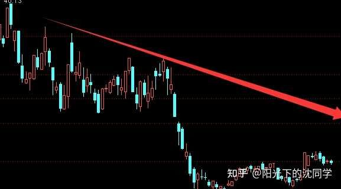
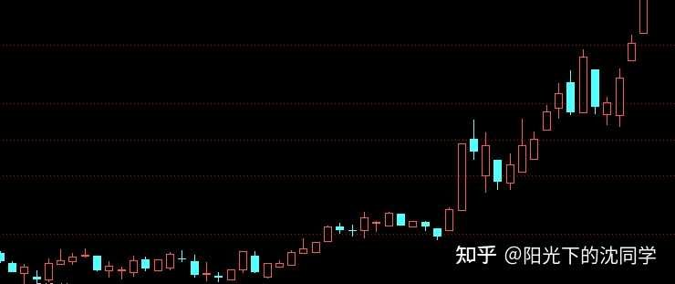
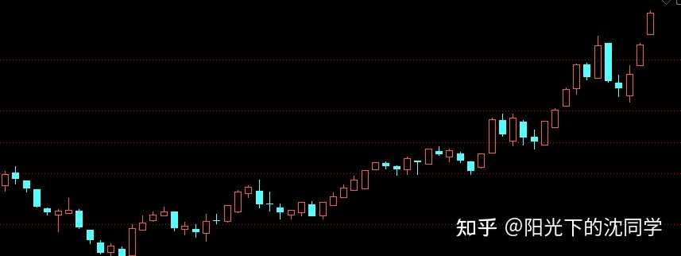
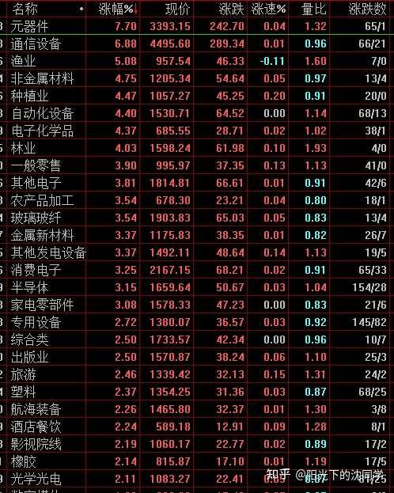
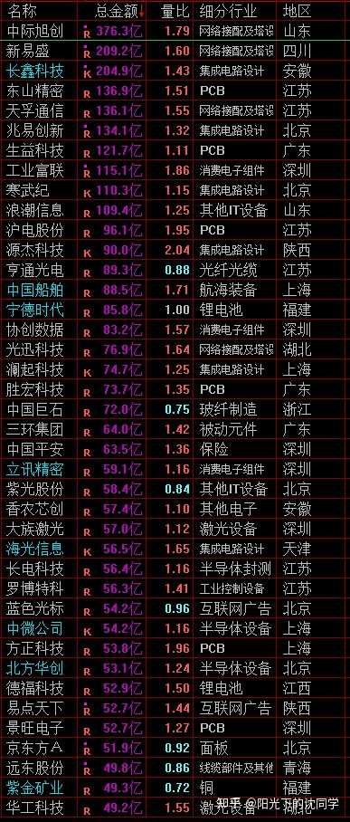
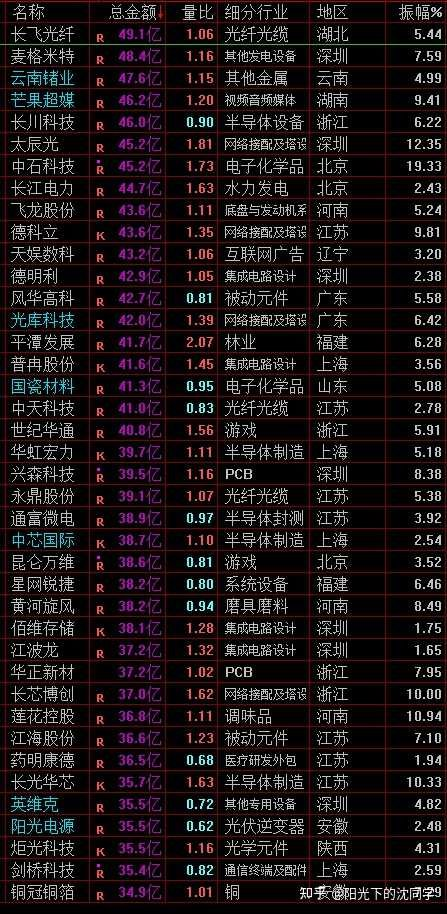
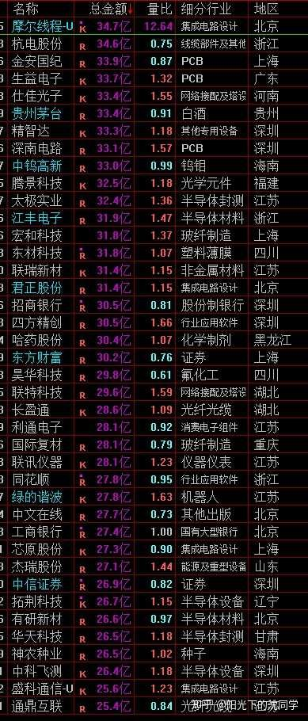

本文的核心逻辑在于区分‘存量博弈’与‘增量行情’。作者指出当前市场处于成交量萎缩的下跌趋势中，本质是缺乏新增资金入场，导致市场陷入‘反弹即抛压’的负反馈循环。作者强调短线博弈必须跟随资金流向（如农林牧渔等热点），而长线配置必须基于估值安全边际。因果传导链：成交量萎缩->市场承接力不足->反弹无法突破前高->趋势性下跌->盲目抄底演变为‘抄顶’。因此，职业投资者的应对策略是‘现金为王’，通过降低仓位和减少交易频率来规避系统性风险，等待市场出现明确的赚钱效应（如成交量放大或政策利好落地）再行介入。
整体资金面来看依旧比较弱，大单交易不足，这种行情不能乱追高
现在资金面比较堪忧，成交量别说稳住2.5万亿，能稳住2万亿都不容易，而且指数目前是下跌趋势，很多股票是越来越弱
比如说下面这种走势，或者类似走势
都是每次反弹没办法新高，然后趋势下跌，成交量很弱，量价配合注【本质逻辑】价格上涨需要成交量放大作为支撑，代表资金认可并积极买入；若缩量上涨，说明买盘动能枯竭，极易反转。【新手提示】看盘时，如果股价创新高但成交量萎缩，这是明显的背离信号，需警惕主力诱多。不好
这种股票尽可能不要乱抄底，尤其是估值比较高的股票，那不是抄底，是抄顶注【本质逻辑】在下跌趋势中，投资者因贪图反弹差价而买入，却因市场承接力不足，买入点反而成了短期高点。【新手提示】下跌趋势中，不要试图接飞刀，估值高低是相对的，趋势的力量远大于估值。
因为下跌趋势已经形成了，估值很高，未来还有很长的下跌趋势要走，不要只看从最高点跌了不少，你觉得可以反弹回去，可以赚这个差价
实际上很多还有巨大下跌空间，你不管是做短线博弈，还是长线配置都不合时宜
长线去配置肯定要估值非常便宜的时候
短线博弈要短线活跃，资金面比较好的选择，而不是这种下跌趋势已经形成，但估值依旧很贵的，这种是不太好做的，但很多投资者都容易踩坑，会想去博弈他们

图中展示了典型的下降通道，高点不断下移，反弹无力。这反映了市场信心缺失，多头力量在每次反弹中都在不断撤退，空头占据绝对主导。
现在其实游资做的比较多的，资金面比较好的是消息面比较热的农林牧渔
这种就是博弈比较火热的方向，最起码走势和资金面是活跃的
我们可以看见农林牧渔的一些相关板块指数走势就是不错的，就像下面截图走势
这种虽然游资活跃，基本面不太好，但利好多，消息面好，走势好，短线机会反而比其他的博弈多
短线博弈不仅仅是选企业本身好的，也要考虑资金面，走势这些情况
短期有没有资金去推动，能不能高位出货，短线是不是活跃，这些才是短线关键

呈现出资金活跃的特征，K线形态稳步向上，说明有游资或主力资金在持续介入，多头力量强于空头，是短线博弈的重点观察对象。

长线和短线不能混在一起做就是这个道理
你总是想短线马上赚钱，然后还希望比较安全，买便宜的好公司，这些条件不容易集中出现
很多时候便宜的好公司不一定短线有博弈机会，或者好公司并不便宜
短线有机会的企业有可能不是好公司，但资金面走势不错，有博弈机会，但你要做取舍就要想清楚自己到底是要做短线还是做长线
想清楚了要做短线，就要把趋势，资金面，走势活跃度放最前面，不能过于理想化做选择，投资很多时候都是取舍，就像很多我看好的长期企业，在很便宜的时候短线也不太行，想做长线配置也要提前一点配置
现在现在很难做，整体机会不多，市场上活跃的品种，尤其是短线比较容易上涨的品种很少，要不就是农林牧渔，要不就是一些一直在涨价的和AI产业链有关的材料，一些AI细分领域
整体不好做，对于不是很难把握这些机会的朋友，减少交易频率，多留现金可能是更好选择
等你看好的企业多跌一点，指数低一点，胜率自然就高了

每天原创不易，读者朋友千万不要忘记点赞支持一下
正所谓先赞后看，腰缠万贯
大家可以先点一波赞，我们再继续慢慢聊
祝点赞的朋友福寿无量，天天开心
指数方面其实可以聊的不多，因为整体没有发生新的变化
资金面没有改善
3950-3650区间依旧是主要运行区间
反弹往上走，3950以上会压力越来越大，4000以上，4150以上那就更加不要说
不是不可以走强，行情其实是千变万化的
很多股票，还有，指数，他们的趋势不是一成不变的，确实可以在下跌趋势，或者上涨趋势的情况下，突然变道，这个当然可以
只不过不会莫名其妙改变走势
就像现在行情是下跌趋势，那么能不能稳得住3950以上？
能不能成交量慢慢起来，资金面好起来？
赚钱效应能不能回来，有没有特别的利好？
这些情况每天都可以关注，如果发生了，行情发生新的改变，不是不可以
所以我们准确说就是现在行情不好做，在没有新的改变之前还是围绕3950-3650区间去做应对，在这个区间里面大跌，机会多一点
要不就这样耐心等待杀跌机会，要不等行情发现变化，出现那种很好的赚钱机会，当然也可以加仓
这种是职业投资者的判断思路
而不是你觉得未来会好起来，你提前满仓，要是没有好起来，也不止损，就一直抗，有时候运气好，真的好起来了，你觉得自己这种行为是对的，很刺激，很勇敢，但多来几次，肯定亏的倾家荡产
这种也是很多新手投资者容易出现的问题，就是不按照市场的情况来做仓位控制，自己幻想一定有行情，提前满仓，且无视行情走势，不做止损
这种孤注一掷的成功确实容易带来很大的成就感，体验过的朋友都知道，但实际上胜率低的这种交易，最终多重复肯定是亏多赚少
应该是现在先控制好仓位，静观其变，只留低估值的安全底仓，不乱加仓，真的有了新的变化，再加仓，跟上行情变化去做
不管是新的主升浪开启，还是大跌带来的廉价筹码机会，都是市场带给你的机会，而不是在没有任何变化之前，你只想满仓博弈，只想意气用事的交易
职业投资者的不一样是比较看实际的盘面走势，没有太多自己的情绪，一切以风险，本金安全为原则
有的做就做，没有就休息
不和市场和行情斗气，把胜率提上来，风险压下去，自然本金越来越多
当然这种交易比较理性，是可能赚钱了也没有那么大的刺激，没有那么大的成就感，因为没有那种置之死地而后生的快乐
但我们需要控制自己追求这种不正确的快乐而且去做错误的交易
这也算是在和自己做斗争，在和自己的本性博弈
最适合新手投资者，上班族，股龄10年内投资者的投资策略分享
美股继续等待未来下跌带来的加仓机会，目前适合拿住底仓，不适合加仓
黄金还可以再等一等，不急着现在定投
红利分化挺大，低位优质企业有机会，上涨比较多的不适合加仓，ETF方面有时候分化没有那么大，所以ETF一定只把握杀跌买入机会，红利优质个股看个股具体走势做，买的便宜最重要
债券可以非常重视，闲钱投资
红利资产有点类似收租思维投资，但更复杂
因为企业可能有很多变化，房子当然也有变化和周期，但很明显股市变化更大，红利资产如果有发生变化，或者红利ETF成分股有变化也是要有调整的
红利资产的有点是交易比房子方便，波动更大，房子其实不容易交易，流动性不太好，而且成本也不一样
好房子挺贵的，需要占用你很多现金流，红利资产股价有高低，ETF也都不贵，你是可以很灵活去配置自己红利资产的
所以用红利资产来收租，来养老是很好的思路
包括以上这些资产，已经算是非常容易去配置，去选择，去调整的
但你要完完全全无脑投资，一成不变，什么都不要想，那投资什么都麻烦
只能说相对其他资产，我认为这些资产已经算非常非常好做的，但凡仓位控制好一点，不要买那么贵，长期复利都不错
尤其是5-8年以上这个维度，就算之前买贵了，也通过时间化解了估值，也通过了股息定投压低成本，后面也一样可以获得7%-15%的复利
如果仓位控制的好，那前面几年的煎熬都没有，整体持仓体验都会不错
不管是什么投资者，你的底仓，应该要有一部分给美股，黄金，债券，红利，你才足够稳定
不能完完全全没有这些资产，大家要听进去
因为真的在非常绝望的时候，最终回过头来看，可以打硬仗的，可以长期熬过来稳健赚钱的还是这些资产
你再喜欢博弈，也不能一点都不配置
我认为更加合理一点的话，40%左右的仓位配置应该给这些稳健资产，这种已经很低了，因为如果你其他60%仓位玩的非常烂的话，可能还是没办法弥补这40%仓位的稳定复利，也要亏钱
什么的优秀的投资者，什么是好的盈利模式，我其实现在也没有非常标准的答案
但我可以模糊的知道，足够安全，有清晰的复利模式，这个就是好的
你可以有不一样的思路，但如果不太好赚钱，胜率低，最终还是不够稳健，这样本金做不起来，肯定是不够好
我认识的职业投资者里面，确实大家的自选股不一样，喜欢做的东西不一样，但可以长期活下来的都是很重视风险的
有专门挖掘那种很便宜的平庸公司的，我个人是不同喜欢，但确实逻辑没有大问题，人家也不是长期持有平庸公司，就是在非常低迷的时候分散配置，赚钱了就跑路，底层逻辑还是买的便宜，是可以理解的
还有专门做活跃度很高股票波段和做t的，专门选择那种企业不错，波动大的，容易做这些波段的，比较纯粹的短线交易，但也是通过高超的技术，在回撤的时候去买，上涨卖出，实际上也没有追高，只不过赚的钱更加波动大，交易频繁
还有很多很多职业投资者，都有自己的赚钱方法，但只要是围绕本金安全，控制风险去做的，就算我自己做不了，我自己不喜欢，但一样可以赚钱
但如果是一直加杠杆，高举高打，喜欢孤注一掷满仓什么的，那没办法成为职业投资者，有时候是一波行情赚钱了，在圈子里面火了，后面都销声匿迹的
有19-22年那时候做医疗耗材，有做新能源什么的赚大钱的，后面没有保住收益，一直还是认为满仓博弈没有问题，最终不仅仅把收益搭进去，本金也没了，有些还想问同行借钱，这种谁敢搭理？
在投资圈子里面混久了也都习惯了，每一轮牛市都有股神出现，都有新贵活跃，然后可以持续活跃的，可以一直还在分享自己投资逻辑的，没有失联的，基本上都不碰杠杆，且非常谨慎小心，都是怕亏钱的主
主要还是因为投资风险太大，不确定性太大，你胆大就会遇见更多风险
减少交易，空仓，证转银，多留现金，分散投资，休息，放弃机会，这些听起来都是散户，新手投资者不喜欢的，都是觉得在浪费机会，赚不到钱的策略，实际上都是比其他更好的策略
比满仓，加杠杆，追高，买入，参与机会更好的
投资就是多做多错，你什么机会都要参与，什么行情都在做，一定是很难赚钱的
行情有周期，便宜了自然会贵，贵了又便宜，给了机会，你只要参与了，成本低了，想不赚钱都不行
没有机会，买贵了，你再努力，天天研究，天天看，也一样容易亏钱
这些都不是说我们投资者可以把握的，我们在行情面前是渺小的，市场才是核心，我们是市场的一部分，但不是主导者
就像面对大自然一样，很无力的，你要博弈极端天气出门，然后安然无恙回来，也可以
但更好的选择是天气好的时候再出门
虽然也可能出门也会风雨骤变，但也可以止损返回
这些都是自己的选择，自然没办法改变，行情没办法改变，我们可以选择更好，更安全的时候去行动，也可以选择止损
大家如果可以想明白这些道理，可以看懂我举的这个例子，你就明白了投资怎么样才能高胜率赚钱，不要逆市场，看懂市场在做什么，比自己想怎么做更重要

该表是基于估值水位制定的防御策略。通过量化估值区间，提醒投资者在‘泡沫’区严禁加仓，在‘低估’区才具备安全边际，这是职业投资者控制风险的底线思维。
大家有任何投资疑问，有什么想交流的都可以付费咨询，想单纯支持一下也可以
【在知乎上我的主页咨询即可，没有任何群，不搞私下小圈子】
家庭资产长期稳健配置方案分享，仓位优化，估值分析，行业分析，心态调整，各种投资学习技巧都可以咨询
大家的支持和尊重是我创作的最大动力
感恩大家每天的付费咨询和打赏，感谢大家对知识的尊重，感谢大家对我的支持
欢迎提问
适合职业投资者，10年以上经验老股民，基本功极其扎实投资者的实战分享
继续聊实战
整体行情机会不多，指数还在震荡，虽然总是会有高开，有时候还可以到3950以上，但很弱，不太好做
短线机会活跃的板块不多，胜率偏低
这样的行情对我来说是不太好做的，我认为胜率不高
我会等待更好的机会出现再加仓
短线仓位暂时维持清仓
我没有信心在这样的行情里面去大幅加仓可以维持高胜率，所以直接选择休息
长线持仓方面也优化的不错了，没有需要大幅优化的，等下一次ETF成分股调整的时候，或者三季报出来再看
其实现在有挺多好公司位置不高，这个确实是机会，如果从长线角度来看，也不是不可以买，就是还想多等一等，想多留点现金，等指数大跌的时候买，可能那时候买入的价格不会比现在低很多，但就是会认为又释放了一个风险，胜率更高
就像一个股票3000点的时候10块钱，5000点的时候也是10块钱，但胜率来看，5000点没有释放掉风险，就肯定没有那么安全，怕指数大跌的时候，很多现在看起来便宜的股票，又错杀一波
防患于未然，所以A股，美股方面不会大幅加仓，港股现在是扑街比较多的，是在做指数成分股的大改，会多关注港股的机会，围绕港股去做一些错杀的买入动作
整体总仓位肯定会低于55%，这个底线会防守好，目前实际上总仓位早就低于了50%，是有很大加仓空间的
仓位控制好了也不怕市场后面怎么运行，都比较灵活，有主动权
真的有什么新的机会，可以跟得上，有钱加仓，或者按照目前下跌趋势后面走弱，持仓都精挑细选过，也有现金流在
这种进可攻，退可守的仓位控制，是我自己目前比较喜欢的
投资者需要让自己处于有主动权的状态，现金就是主动权，总是满仓就会非常被动
大家如果训练到可以拿得住钱了，胜率自然就高了，大家可以试一试



风险提示：股市有风险，入市须谨慎
今天是坚持写复盘笔记的第1517天【每日打卡】
下面是我自己多年来的一些重要的心得感悟，分享给大家，会不定期增加内容
1，
长期投资成功的关键是稳定的情绪和沉稳的性格，这些比过人的天赋更重要
2，
最终我们穷其一生获得的一切经验、知识和所有财富都需要转化为自身的品德修养，不然获得越多失去越多
自身的修养是留住各种财富最好的容器，富裕一时不难，富裕一生不易
珍惜获得的一切，保持初心、慈善、知足，让自己的德行和财富共同成长，才能方得始终
3，
古之成大事者，不惟有超世之才，亦必有坚忍不拔之志
想成为优秀的投资者一定要持之以恒，不断学习，反思，总结，在投资中获得的各种经验最终都会成为你财务自由的砖瓦
4，
再高的智商也一样会被情绪一瞬间冲垮
大部分的亏损都来源于投资者的冲动和情绪化交易，学会控制自己的情绪和心态才能长期稳定的复利
5，
富在术数，不在劳身
一定要多思考，任何时候想清楚了再交易，漫无目的的交易，只会多做多错
6，
利在势居，不在力耕
投资赚钱主要靠把握时机，没有机会就休息，多留现金
做可以让自己心安的投资，便是对于你来说最好的盈利模式
7，
谨记：贪念起，万念俱灰！
控制住了风险，利润会随之而来
富贵险中求，也在险中丢
求时十之一，丢时十之九
仓位情况【不推荐模仿】
短线博弈仓位：0%
长线+短线总仓位尽可能低于55%，这样更符合当前行情的风险程度
长线资产配置目前个人分散持有：各种债券ETF+各种核心红利ETF+美股ETF+黄金+优质REITS+长期看好的优质企业+核心ETF
美，港，A股长线+短线所有股票持仓投资方向配置比例参考：
金融：10%
消费：31%
生物医药：13%
AI产业链：7%
能源，动力：9%
高端制造：25%
周期：5%
【每3-6个月更新一次】
最新更新时间2026年9月
祝大家在如梦如幻的行情里清醒而自由
全文逻辑总结：当前A股处于弱势震荡期，核心矛盾是流动性不足。作者建议新手投资者放弃‘满仓博弈’的幻想，转而采取‘防御性配置+现金流管理’的策略。新手避坑指南：1. 严禁在下跌趋势中盲目补仓；2. 区分短线博弈（看资金流向）与长线配置（看估值安全），切勿混淆；3. 现金即主动权，在市场不明朗时，空仓休息本身就是一种高胜率的交易策略；4. 远离杠杆，任何试图通过孤注一掷实现暴富的行为，最终都会在市场波动中被清零。


![[图片]](https://picx.zhimg.com/v2-94da9fb62d08ad99191484280fc5c220_qhd.jpg?source=1d2f5c51){kind=link}
{kind=link}
打卡，抢第一，行情没什么好玩的，老沈更新也越来越晚了
我每天都会收藏文章，然后晚上慢慢看文章里面截图老沈自选股的变化
认真研究以后经常可以看出来老沈最新的选股思路变化，不知道有没有和我一样的兄弟，我感觉这个是很重要的细节
最近这一波老沈自选股的变化非常大，剔除了很多科技，加入了一些新票子，挺有意思的，看来有必要再找老沈咨询咨询，确认一下最新的自选股筛选思路
我不喜欢抄作业，我喜欢对作业，就是想看看一些大佬的自选股是怎么样的，和自己看好的企业做对比，可以拓展一下自己的思路，投资主要是学习思路，分享代码没有用，在不同的人手里，代码的作用天差地别，那么多人推代码，真正跟着赚钱的又有几人？
我每次咨询老沈主要都是想听听老沈遇见这种情况会怎么做，怎么想，而不是让老沈帮我做决定，这样我永远没办法成长
想把投资做好一定要自己有一套逻辑，自己的盈利模式，我虽然还不是很懂投资，但我对投资很感兴趣，愿意去慢慢学习
最后说点心里话，一开始我在互联网上也是到处问代码，老沈从来不直接聊代码，我还喷过他，只不过他可能不知道是我，我相信他不会介意这些，也算是小误解
后面玩短线吃了太多亏，慢慢的才理解了老沈写的东西，重新开始打基础，学投资
很感谢老沈可以持续高质量分享，提供了很多宝贵的投资思路，这些真的是无价的，别的地方根本学不到，也没人愿意真的分享，其他的地方都在疯狂推代码，老沈绝对是一股清流
继续笔记
1、 没成交量，没主线，宜休息。
2、 美股继续等待未来下跌带来的加仓机会
3、 黄金还可以再等一等，不急着现在定投
4、 债券可以继续闲钱投资
5、 红利分化挺大，低位优质企业有机会，上涨比较多的不适合加仓
无聊的行情，多学习积累经验，其他先苟着。
各种国债ETF，老沈说过的，你也可以具体咨询问问
恒生科技被套10%[流泪]根本没有底
前6年，由于追加了投入，自己6年炒股副业收益大于自己主业薪水不少。加上追加投资之前股市连续盈利的10年，飘了，产生了可以靠炒股养家的错觉。
今年感觉我在股市投入的精力与收益完全不成正比了，费那么大劲，8个月，账户只是微红，看来得及时止损精力了，不玩了，证转银2/5，休息。
转银后，仓位从48%来到近80%，今后若是机缘巧合，碰巧瞅见机会了，就再来玩。
接受新事物比较慢，科技股还没有怎么看懂，也不敢多买，只敢轻仓玩一玩，可以说是错过了本次牛市90%的肉。
我觉得这个时代是非常浮躁的，一开始不喜欢看这种太专业，没有代码的内容是真的很难看懂和看进去的，真的要自己经历过很多实战，才能懂得老沈分享的内容多么可贵，一开始就能长期看老沈的那估计都是老股民了，属于本来自己就懂的
读懂老沈内容不是容易的事情